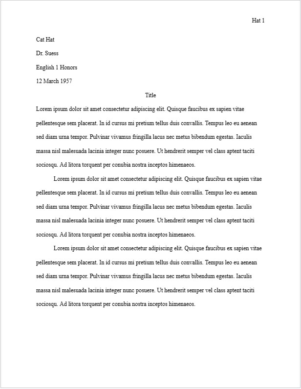

MLA (known as Modern Language Association of America) is an organization most known for its style which is a set of rules that is commonly used in pieces of literatures such as essays, articles (like this one, not other ones), etc. The MLA association itself was founded in 1883 with the goal of promoting of studying and teaching literature in the States. Since then, many other organizations, companies, and school districts have adopted the MLA style of writing (which all the rules will be explained in a little bit).
An MLA paper is first created digitally and set to a letter size or 8.5" x 11". Next the paper has to have 1 inch margins on all sides (top, bottom, left, right). The text within the paper itself has to have only one, readable, the best font being Times New Roman (which is the font of this article) and 12pt in size. The paper itself has to have double spacing and there should be no space in between paragraphs. A title is also included and is centered, not bolded, italicized, or underlined.
Aside from the paragraphs and title, in MLA and many other formats, two important components of a paper are also written called the running head and header. The header is a four line heading that is left-aligned and contains your name, your instructor's / teacher's name, the course name and number, and the current date (however you may be asked to instead put the due date of an assignment). The running head is a block of text containing your last name and the page number, it is repeated across all pages of a paper.
Here's an example of an MLA paper...
